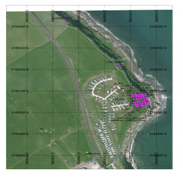
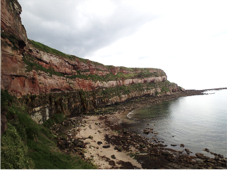
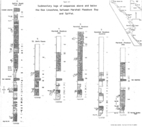
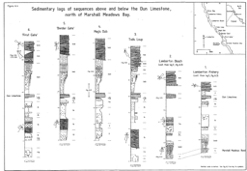
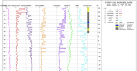
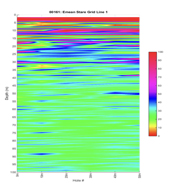

Mapping Limestone at Marshall Meadows Bay
Project Aims
The aim of this project was to demonstrate Adrok’s ability to identify a limestone bed within a silty sandstone cliff face. The goal of the project was to prove Adrok’s ability to differentiate between lithologies and to provide Heriot-Watt University with data for a master’s project. The study took place at Marshall Meadows Bay on the border between England and Scotland in May 2014. Data was collected from three sites and a 50m by 50m stare grid was conducted at the first of these sites.
 Figure 1: Site survey overviewExploration Challenges
There were no significant challenges to be overcome during the data collection. However, the Masters student did struggle to identify any trends or correlations in the data provided by Adrok. In response to this Adrok conducted a thorough review of the data collected and then produced our own interpretation from the original field data.
Geological Context
Heriot-Watt University provided information from a British Geological Survey borehole drilled approximately 200m south-west of the survey area. In this borehole the Dunite Limestone (Early Carboniferous in age) is a single 1.6m thick unit bound at the base by a conformable marine mudstone and above by a transition from marine mudstones to deltaic sandstones. Across the study area, the Dunite Limestone is usually found just above a coal seam or seatearth, according to both the logs provided by Heriott-Watt University and the BGS website Heriot-Watt University also provided details of sedimentary logs interpreted from various locations across the cliff face. (figure 2, 3 and 4).
 Figure 2: The cliff face scanned by Adrok.  Figure 3: Sedimentary log of the Marshall Meadows Bay area provided by Heriot-Watt University.  Figure 4: Sedimentary logs of the cliff face from First Gate to Lamberton.Results
Peaks in weighted mean frequency, e-mean, and e-sd all matched or closely matched up with the Dunite Limestone (figure 3). By interpolating this data along the lines of the stare grid it was noted that this feature was dipping to the south down the cliff face (Figure 4).
 Figure 5: Energy harmonics plotted with dielectric constant, e-log and weighted mean frequency. A peak almost identical in thickness to the limestone can be seen.  Figure 6: E-man values from 0-50m of the stare grid showing several features dipping to the south.3D mapping of these peaks was then completed using the stare grid (Figure 5) which suggested a slight deepening of the structure to the west
Figure 7: 3D model of E-mean data showing a slight dipping of the structure to both the south and west.Dielectric constant and e-logs did not appear to match the lithology data. Frequency harmonic values did fluctuate greatly beneath the bottom of the cliff face.
Client Benefits
Adrok has demonstrated an ability to identify stratigraphy using harmonics and weighted mean frequency. This has been completed without any health and safety issues and without any destruction to the survey area.
One of the potential unexpected benefits that need’s further research is to test Adrok’s ability to monitor changes in tidal activity using frequency harmonics (figure 6). This was suggested by Dr Tim Pritchard Head of technology at BG group
Project Outcomes
Heriot-Watt University are currently running the data though their software in order to investigate how closely the Adrok’s data matches up with the BGS borehole. The eventual goal is to write up the findings into a peer-reviewed paper and further collaboration between Heriot-Watt University and Adrok. This may include a PhD project.